Your plant’s second wind.
Everything here is flat 2D vector, generated by tools/. No mascots or faces: personality comes from the wilted → revived transformation and the aura glow.
Logo
Leaf-in-drop mark with a two-ring aura. Use the simple mark below 32 px.
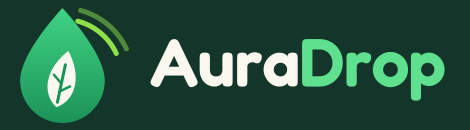
Reverse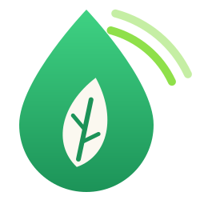
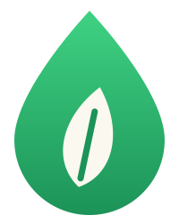
Colour
Two states: wilted (sage, dusty neutrals) and revived (greens with an aura-lime glow). Accents are used sparingly.
Text, dark UI
Primary, buttons
Highlights
Glow, sparkles
Wilted state
Background
Pots, pests, CTA accent
Water
Light, warnings
Packaging
Typography
Rounded and bouncy for headlines, quiet and readable for body.
Drop. Glow.
Snap a photo of your plant. We spot what’s wrong and ship the exact kit it needs: soil, nutrient drops, pest remedy or a self-watering globe.
Plants: wilted → revived
The core illustration set. Always show both states; the revived plant gets the aura glow and sparkles.
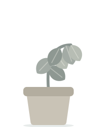
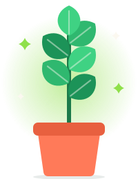
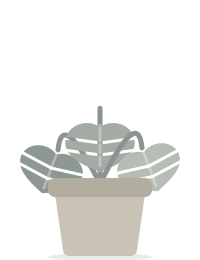
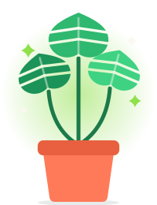
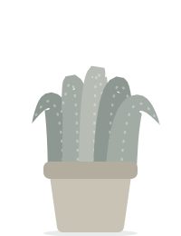
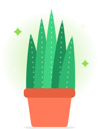
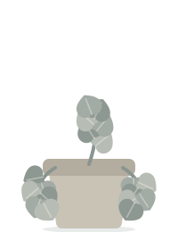
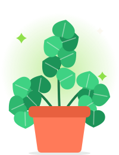
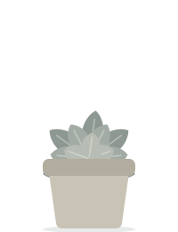
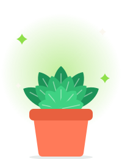
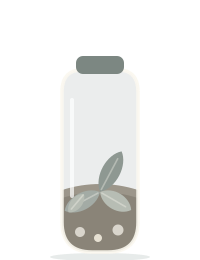
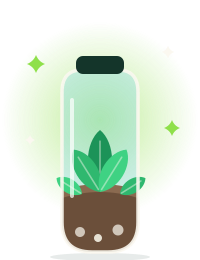
The kit
Kraft box, forest-green mark, glowing plant on opening.
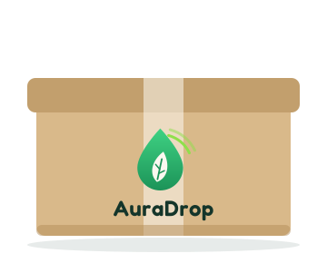
Box · closed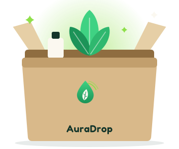
Box · open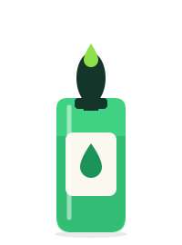
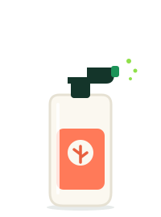
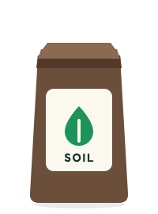
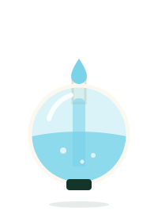
App & icons
Four-step flow, plus supporting icons. Heavy rounded 5 px strokes in Forest with one fill accent.
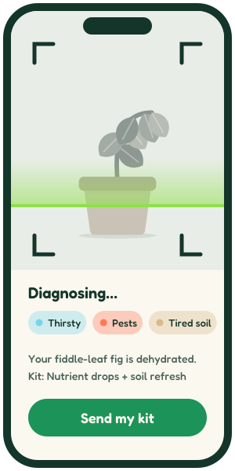
Snap → Diagnose screen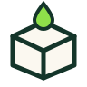
Drop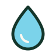
Water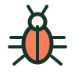
Pests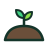
SoilPatterns & decor
Use rings and blobs behind revived plants. Never put the glow behind a wilted one.
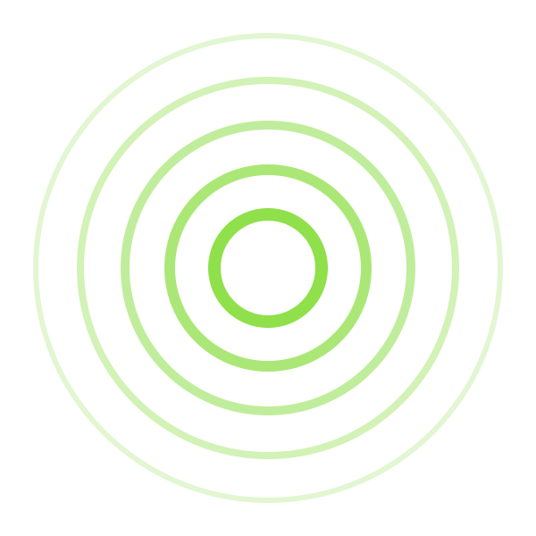
Aura rings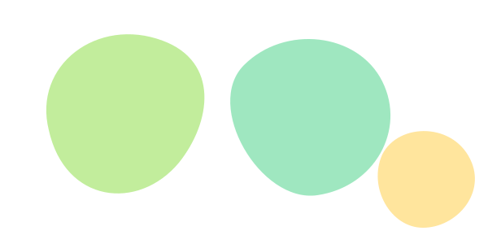
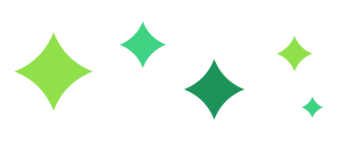
Social & share
PNG exports are alongside the SVGs in assets/social/.
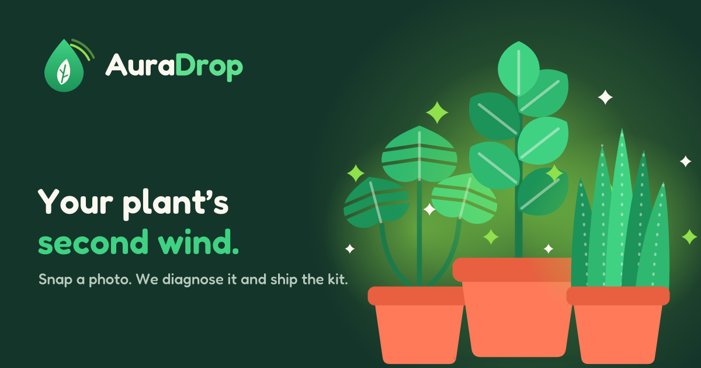
Open Graph · 1200×630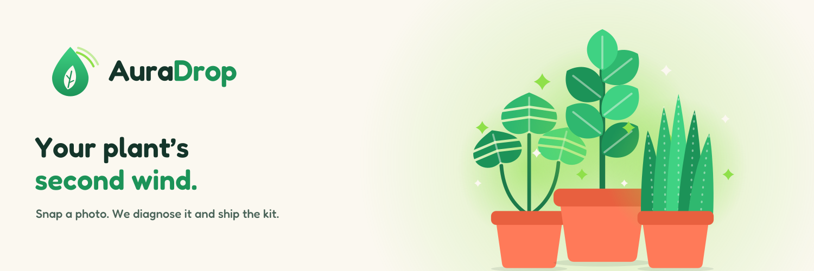
Banner · 1500×500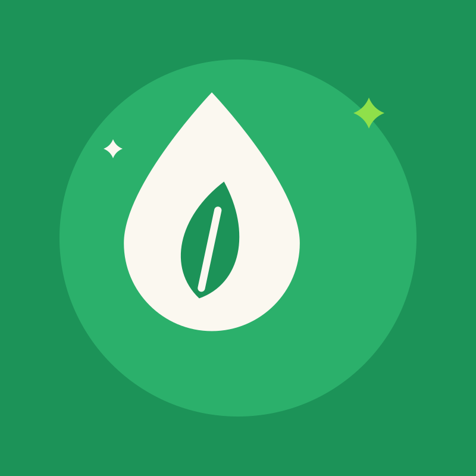
Profile · 800×800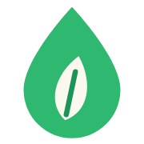
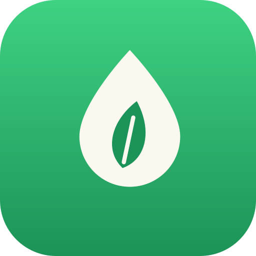
Voice
Caring, quick and a little cheeky. Plant doctor with a sense of humour, never clinical, never twee.